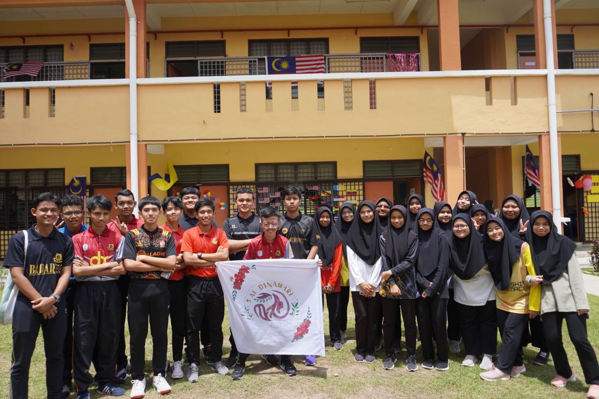

I had so much fun when I was at my secondary school. I met a lot of new people and despite that, I became a new version of myself. During my secondary school years, I participated in various activities, competitions, and school events that helped me grow academically and personally. These experiences taught me teamwork, leadership, and confidence.
These videos capture some of my favourite moments during secondary school, including school events, celebrations, and activities.